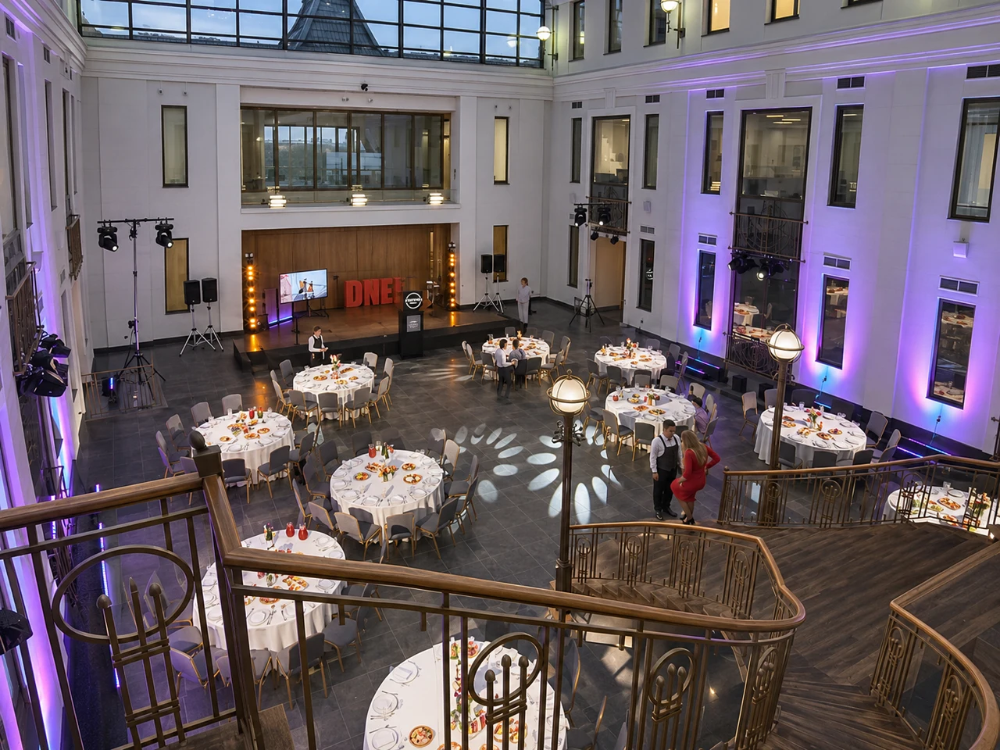
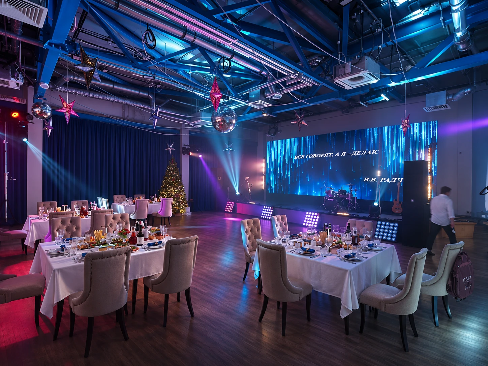

Свет и звук на корпоратив.
Ужин за столами, речь руководителя и концерт требуют разных решений. Начинаем с программы и расстановки в зале.
Один зал в двух сценах
Два кадра с нашего корпоратива сняты 15 ноября с разницей примерно в час. На первом хорошо виден рисунок света на столах. На видео из того же зала можно посмотреть, как выглядит площадка во время работы света.
Для выступлений и награждения выделяем человека на сцене. К выходу артистов и танцевальной части можно менять цвет, направление лучей и темп переходов.

Когда выступает группа
Попросите у музыкантов технический райдер и передайте нам вместе с расписанием. Звукорежиссёр разбирает с группой состав бэклайна и микрофонов. Время саундчека планируем до входа гостей.
Для ведущего, фоновой музыки и выступления кавер-бэнда нужны разные комплекты. В расчёте учитываем программу, имеющуюся акустику и помещение.
После официальной части
Когда гости переходят на танцпол, акцент перемещается со столов и сцены. Для клубной части используем движущийся свет и пиксельные приборы. Сценический туман обсуждаем с площадкой заранее.
На фотографии из нашего архива видно, как меняется характер банкетного пространства, когда в работу включаются цвет и лучи.
